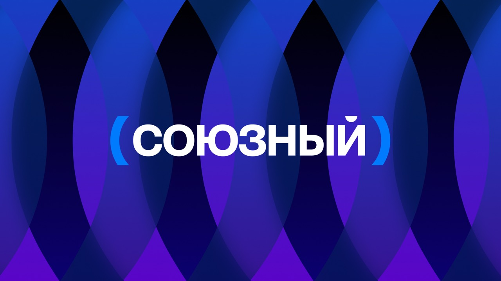

Телеканал «Союзный» · 2025
«Союзный» — айдентика и эфирный пакет
К перезапуску «Союзного» сделали логотип, брендбук и эфирный пакет: от титров и погоды до технических заглушек.

К перезапуску телеканала «Союзный» мы разработали фирменный стиль и пакет эфирной графики. В знаке соединили букву «С» и круговой цветовой спектр. Из той же геометрии вывели скобки, которые выделяют слова в кадре и меняют цвет в зависимости от формата.
На этой системе собрали титры и анонсы, заставки и перебивки, оформление прогноза погоды и технические заглушки. Правила работы с графикой собрали в брендбуке, а стиль перенесли на мерч.